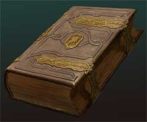

Oltre al Cristallo di Roccia Sacro di Srodan esistono altri oggetti sacri per il culto della divinità.

Il Tomo della Sacra Roccia è il testo sacro del culto di Srodan. Questo grosso volume ha un peso pari a 4 libbre ed un costo pari a 500 monete d'oro. Il Tomo contiene gran parte della storia della razza nanica.
Ogni chierico di Srodan a partire dal terzo livello di esperienza può, possedendo una copia personale del libro sacro, utilizzarlo durante le preghiere giornaliere assieme al Cristallo di Roccia Sacro. Quando il chierico effettua la lettura del libro sacro può selezionare un numero massimo di beneficiari, tutti appartenenti alla razza dei Nani del Massiccio, pari al numero di lingue corrispondenti al punteggio di intelligenza posseduto (se il chierico vuole ottenere il beneficio costui dovrà regolarmente essere contato nel numero dei beneficiari).
Quando il chierico legge a costoro parte del Tomo Sacro ed utilizza al contempo un certo ammontare di potere sacro dal cristallo per ogni beneficiario costoro riceveranno un beneficio di origine divina che potranno utilizzare una sola volta nell'arco dell'intera giornata. L'attivazione di questo beneficio si considera una free action. Per determinare la tipologia del beneficio concessa a tutti i beneficiari per quella giornata si tiri 1d8.
1-2) La carica guidata da Snud Elmo Appuntito contro il portale della roccaforte dei Testanera. Tutti i nani potranno utilizzare il bonus ad un loro Tiro per Colpire. L'applicazione di tale bonus di origine divina deve dichiarato prima di effettuare un qualsiasi tiro per colpire nell'arco della giornata.
3-4) I devastanti colpi inferti da Boor Mallo d'Acciaio al capo dei Troll del Valico Oscuro Ghildamesh. Tutti i nani potranno utilizzare il bonus alle Ferite. L'applicazione di tale bonus di origine divina deve dichiarato prima di effettuare un qualsiasi tiro per le ferite nell'arco della giornata. La tipologia di ferite si considererà dello stesso tipo di quello dell'arma utilizzata (botta, taglio o perforazione). Il bonus divino non consente di per sé di colpire creature immuni alle armi normali ma per la sua origine permette di superare il danno massimo concesso dal dado di danno dell'arma.
5-6) La strenua difesa posta in essere da Rondor Barba d'Argento all'interno del Tempio delle Pietre Nere durante l'attacco dell'orda degli Gnoll provenienti da Valle Rocciosa. Tutti i nani potranno utilizzare il bonus alla loro Classe Armatura. L'applicazione di tale bonus di origine divina deve dichiarato nella fase delle intenzioni. Il personaggio può utilizzarlo solo qualora sia cosciente. Una volta utilizzato il personaggio otterrà il beneficio per tutto il round in corso.
7-8) La resistenza del Baluardo di Srodan, Bondor Pelle di Pietra, al gelido soffio del drago Saar Lingua Gelata. Tutti i nani potranno utilizzare il bonus ad un loro Tiro Salvezza. L'applicazione di tale bonus di origine divina deve dichiarato prima di effettuare un qualsiasi tiro salvezza nell'arco della giornata.
L'ammontare del bonus può essere determinato dal chierico in base al livello di esperienza raggiunto ed all'ammontare di potere sacro che lo stesso decide di utilizzare secondo lo schema espresso nella seguente tabella:
| Livello di esperienza minimo richiesto | Ammontare del bonus concesso | Potere Sacro Utilizzato (per nano) |
| 3° livello di esperienza | +1 | 1 Punto Sacro |
| 5° livello di esperienza | +2 | 3 Punti Sacri |
| 7° livello di esperienza | +3 | 6 Punti Sacri |